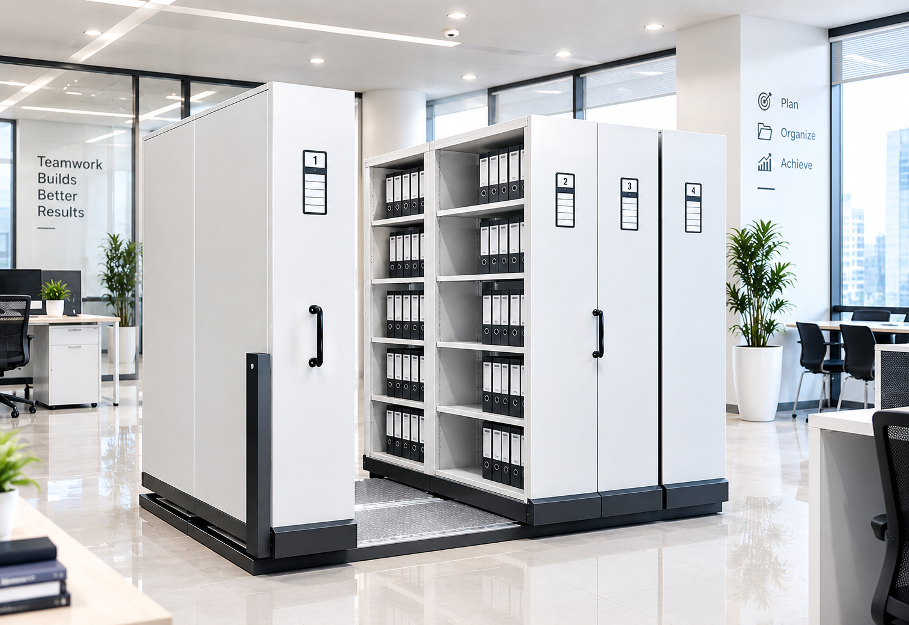
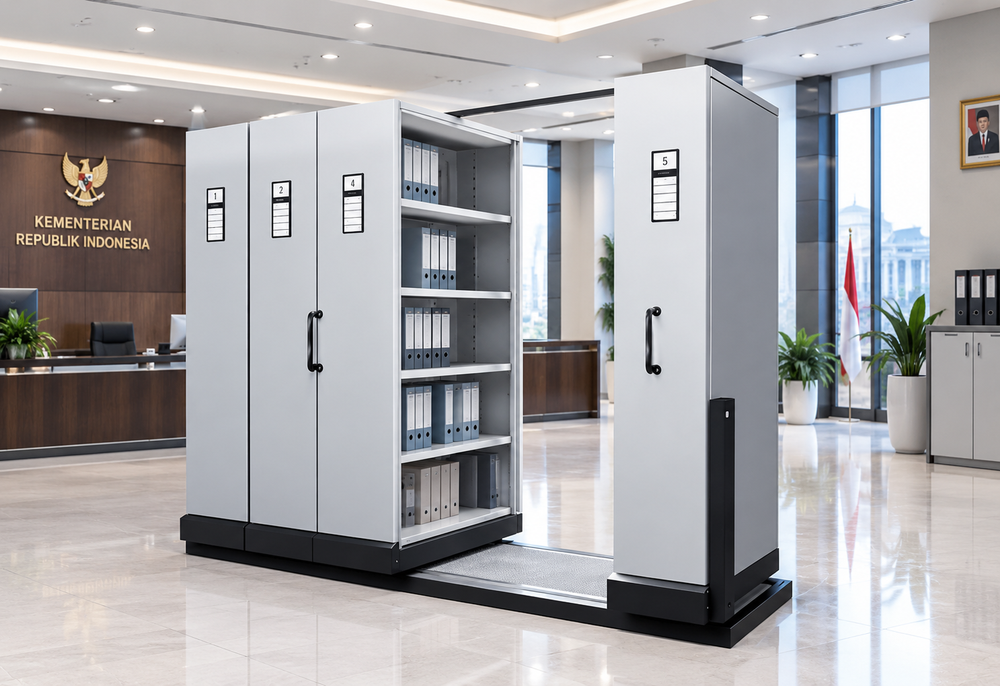
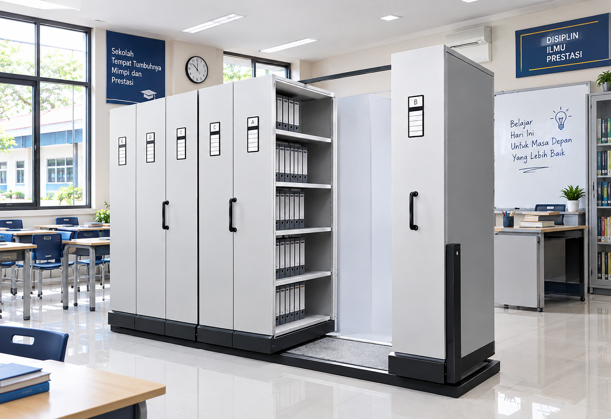
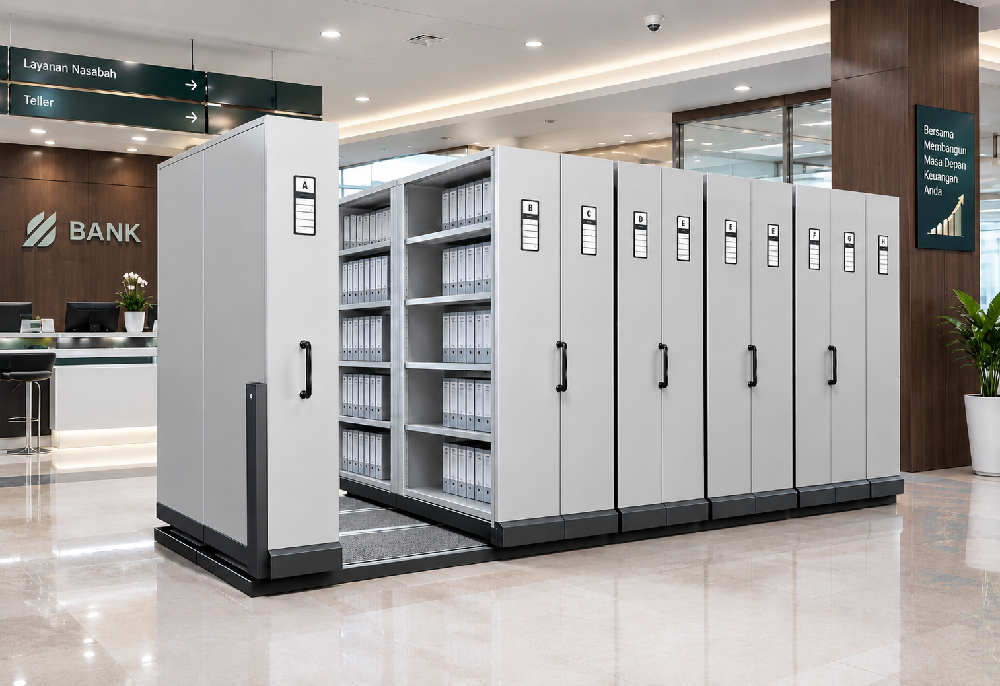
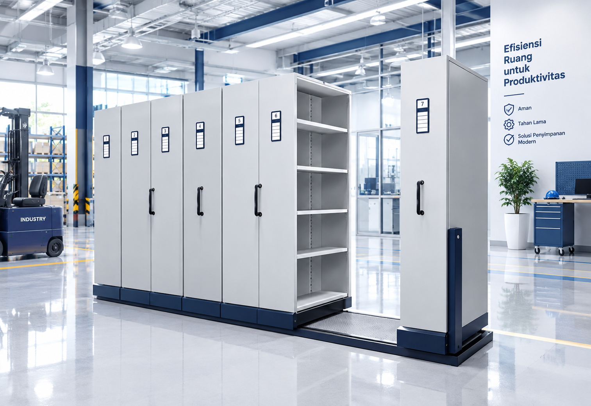
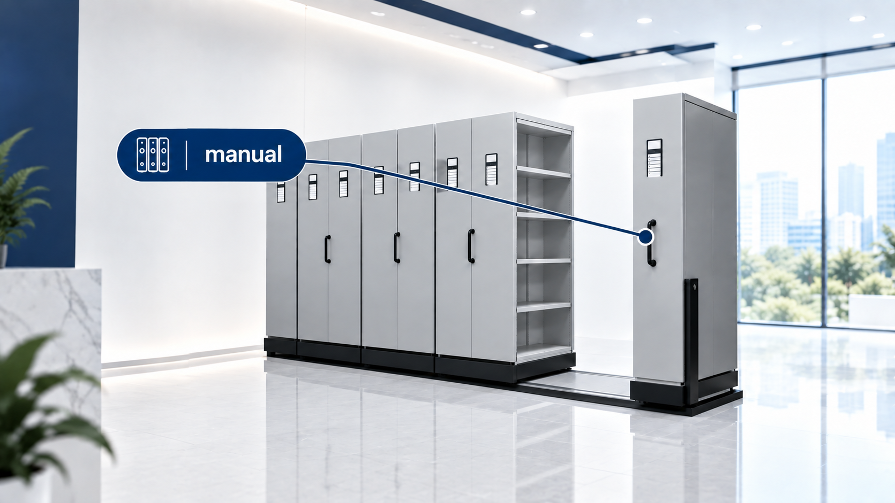
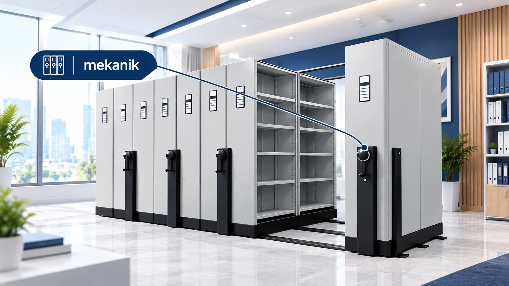
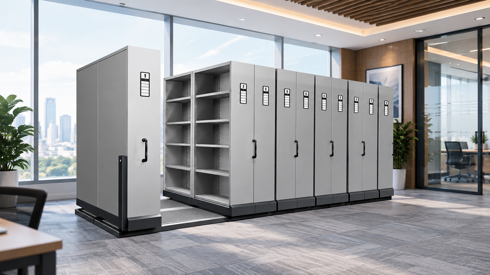
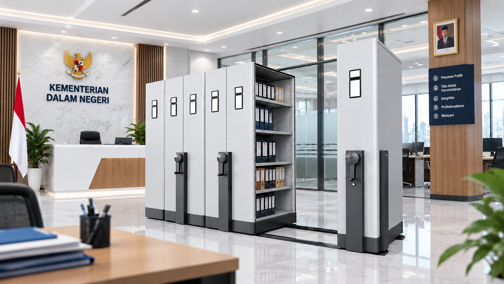
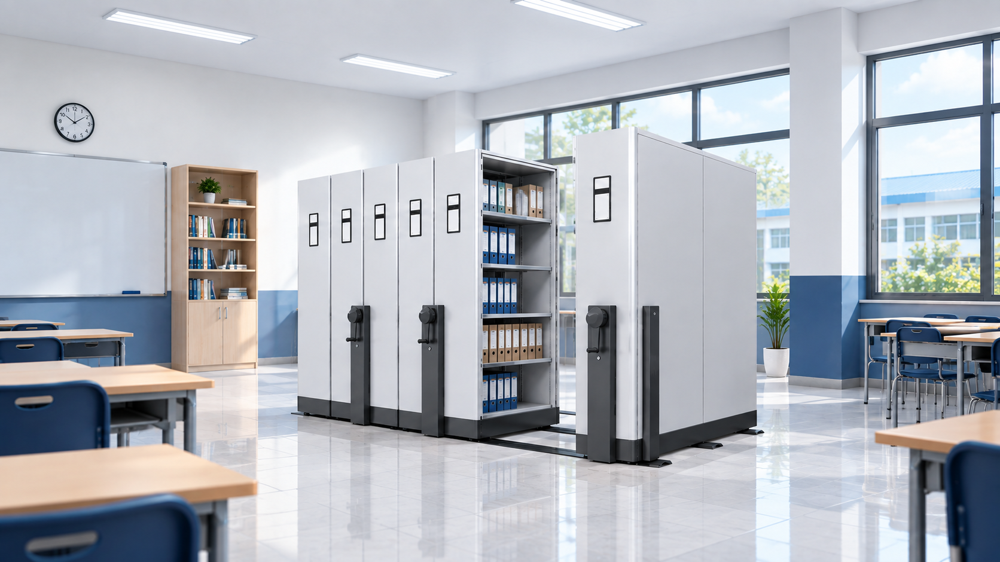

5 Tips Efisien Mengatur Arsip Dokumen di Kantor
Pelajari cara mengoptimalkan ruang penyimpanan kantor dengan mobile file dan sistem pengindeksan yang tepat.
Solusi penyimpanan dokumen yang ramping, efisien, dan mudah diakses. ZECO hadir dengan mobile file manual maupun mekanik untuk kebutuhan kantor, pemerintahan, rumah sakit, sekolah, dan industri.
Pengelolaan arsip yang kurang tepat dapat membuat ruang kerja terasa penuh, pencarian dokumen menjadi lambat, dan penyimpanan sulit ditata.
Arsip yang terus bertambah dapat membuat lemari konvensional cepat penuh dan mengurangi ruang yang tersedia untuk aktivitas kantor.
Penempatan dokumen yang tidak teratur membuat proses pencarian memerlukan waktu lebih lama dan berisiko menghambat pekerjaan.
Arsip yang tersebar di banyak tempat dapat menyulitkan pengelolaan, pengelompokan, dan penataan dokumen berdasarkan kebutuhan.
Lemari arsip dengan jarak antar rak yang tetap dapat menyisakan area yang kurang termanfaatkan, terutama ketika volume dokumen semakin besar.
Solusi penyimpanan arsip yang dapat disesuaikan dengan karakteristik dan kebutuhan setiap sektor.

Membantu menyimpan dokumen administrasi, keuangan, legal, dan operasional secara lebih rapi serta mudah diakses.

Mendukung penataan arsip dalam jumlah besar dengan pengelompokan dokumen yang lebih terstruktur.
Membantu menata arsip administrasi dan dokumen institusi dengan pemanfaatan ruang penyimpanan yang lebih efisien.

Cocok untuk membantu mengelola arsip akademik, administrasi, dan dokumen institusi dengan susunan yang lebih rapi.

Membantu mengelompokkan dokumen finansial berdasarkan kategori dan periode agar lebih mudah ditata dan ditelusuri.

Menjadi bagian dari sistem penyimpanan untuk membantu mengelola volume arsip tinggi dengan pemanfaatan ruang yang lebih optimal.
Dua tipe yang tepat untuk kebutuhan penyimpanan Anda yaitu mobile file manual dan mobile file mekanik.

Sistem gerak manual yang sederhana dan andal, cocok untuk ruangan dengan akses rutin dan fleksibilitas tinggi.

Sistem gerak mekanik yang memudahkan akses dokumen dengan satu sentuhan, ideal untuk ruangan dengan volume dokumen tinggi.
Kami tidak hanya menyediakan mobile file, kami mendukung Anda dengan konsultasi desain hingga instalasi agar solusi penyimpanan yang Anda dapatkan benar-benar optimal.
Konsultasikan KebutuhanTemukan artikel kami mengenai tips penyimpanan arsip yang efisien dan peran mobile file di berbagai sektor.

Pelajari cara mengoptimalkan ruang penyimpanan kantor dengan mobile file dan sistem pengindeksan yang tepat.

Mengapa mobile file menjadi solusi ideal untuk pengelolaan dokumen di lingkungan pemerintahan.

Langkah sederhana untuk memastikan mobile file Anda tetap optimal dan tahan lama dipakai.
Mobile file manual digerakkan secara langsung oleh pengguna, sedangkan mobile file mekanik menggunakan mekanisme roda gigi atau sistem gesek untuk perpindahan yang lebih halus dan mudah.
Kami memberikan konsultasi gratis untuk menghitung kebutuhan kapasitas, dimensi ruangan, dan jenis dokumen agar mobile file yang dipilih memenuhi kebutuhan Anda.
Ya. Mobile file ZECO dirancang menggunakan bahan premium yang tahan lama, dilengkapi dengan sistem melintas yang licin dan awut terukur untuk penggunaan intensif.
ZECO melayani penyampaian dan instalasi mobile file ke seluruh wilayah Jabodetabek dan kota-kota besar di Indonesia. Silakan konsultasi wilayah Anda.
Produksi standar membutuhkan 4-6 minggu, sedangkan pengiriman dan instalasi memakan waktu 1-2 minggu tergantung lokasi. Kami juga menyediakan opsi ekspres.
ZECO memberikan garansi struktural selama 3 tahun dan garansi mekanik selama 1 tahun untuk semua produk mobile file kami.
Hubungi tim kami sekarang dan dapatkan konsultasi gratis terkait solusi penyimpanan arsip yang tepat untuk Anda.
Konsultasi Sekarang